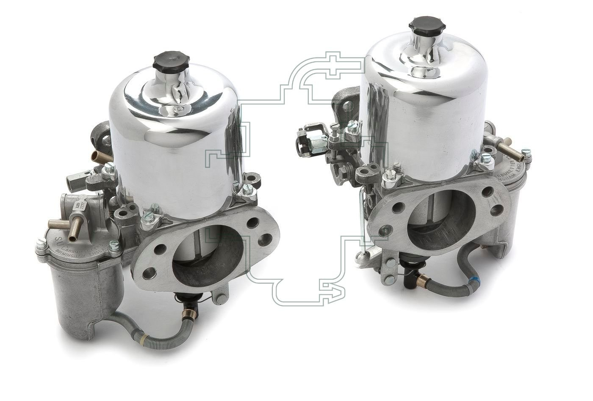

De Jaguar XJ6 Series 1, geproduceerd tussen 1968 en 1973, wordt door velen beschouwd als het summum van klassieke Britse luxe en techniek. Met zijn sierlijke lijnen, sublieme rijcomfort en krachtige zes-in-lijn motor was dit model een directe aanval op de gevestigde orde in het luxesegment. Wat deze auto onder de motorkap echt bijzonder maakt, is het gebruik van SU HS8 carburateurs in combinatie met een AED, een systeem dat net zo intrigerend is als het karakter van de auto zelf.
De motor en de carburateurs: SU HS8
De XJ6 Series 1 was leverbaar met zowel een 2.8-liter als een 4.2-liter zescilinder lijnmotor, beide uit de legendarische XK-motorfamilie. In de 4.2-liter versie werd gebruikgemaakt van twee SU HS8 carburateurs, een indrukwekkende configuratie met 2 inch (50,8 mm) doorgang per carburateur.
Deze HS8's zijn typisch Brits: eenvoudig qua principe, briljant in uitvoering. Ze werken met een variabele venturi en een zuigernaald, wat zorgt voor een nauwkeurige brandstofdosering, ongeacht het toerental of de belasting. Mits goed afgesteld zijn ze stil, soepel en verrassend efficient.
Het startprobleem: de AED
Waar de SU HS8's lovende kritieken krijgen, ligt dat bij de AED (Automatic Enrichment Device) anders. Dit automatische choke-systeem was bedoeld om de koude start te vereenvoudigen. In theorie hoefde de bestuurder alleen de sleutel om te draaien en de AED zou zorgen voor de juiste verrijking totdat de motor op temperatuur was.
In de praktijk is de AED een beruchte bron van problemen:
- Te rijk lopen bij warme motor
- Slecht stationair draaien
- Onvoorspelbaar inschakelen
Het systeem is volledig automatisch en mist een handmatige override, wat afstellen of testen bemoeilijkt. Het gevolg: veel Jaguar-eigenaren hebben de AED in de loop der jaren vervangen door een handchoke of een dubbele startknopconfiguratie.
Revisie of modificatie?
Bij Carburateur Service Nederland krijgen we regelmatig SU HS8's met AED binnen van Jaguar XJ6-bezitters. We kunnen deze carburateurs volledig reviseren, inclusief:
- Vlotternaalden en -zittingen
- Dempingsolie- en zuigercontroles
- Nieuwe pakkingen en membranen
- Synchronisatie op de testbank
En wat betreft de AED? Die kunnen we reviseren, uitschakelen of volledig verwijderen, in overleg met de klant. In veel gevallen raden we een conversie naar handchoke aan: het verhoogt de betrouwbaarheid en je behoudt de originele look.
Tot slot
De Jaguar XJ6 Series 1 met SU HS8 en AED is een prachtige klassieker met een hart voor detail. Zijn charme zit in de combinatie van luxe, techniek en karakter. Wie zijn carburateurs goed laat reviseren en weet om te gaan met de AED (of het juiste alternatief kiest), zal merken dat deze Brit nog steeds zijn mannetje staat, op de weg en in de garage.
Meer weten over revisie van SU HS8 carburateurs of het ombouwen van de AED? Neem gerust contact met ons op. We denken graag met je mee, van klassiek origineel tot betrouwbaar gemodificeerd.